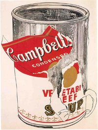
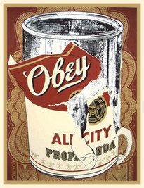

Big Torn Campbell's Soup Can (Vegetable Beef)
From The Giant: The Definitive Obey Giant Site
1962 work by reknowned artist Andy Warhol[1]. This work is executed in acrylic on canvas and is an impressive 72 by 53 1/2 inches.
It currently resides in the Kunsthaus Zürich, who had this to say about the work:
A soup can. For centuries artists had abided by the principle that any replication of reality in an artwork had to convey meaning. Andy Warhol saw things differently: "I hate just objects, they have no interest for me at all, so when I paint I just make more and more of these objects, without any feeling for them." And when asked why he'd chosen a soup can of all things, he replied tersely that it was because he had been eating it every day for 20 years. Warhol drew on simple means to undermine the Sublime and the Beautiful, the seemingly most noble traits of art, elevating a discarded, worthless object by making it the subject of a large-scale work on canvas - this affront to conventional American exhibition goers culminated in a rage-filled scandal the first time the picture was exhibited in Los Angeles the same year. It was in that same year that Warhol discovered silk screening (a screen printing technique), and the Zurich soup can became the first subject of a series and the departure point for a period of enormous productivity that left out none of the icons of the 20th century, from Mao Tse Tung, the Heinz ketchup bottle and Marilyn Monroe to the electric chair. Warhol ultimately became a Pop icon himself. In retrospect, Andy Warhol pushed complete apathy to art further than all his contemporaries, not destroying art in the process but giving it new potential. It may sound strange but he is comparable to Marcel Duchamp in this way. With its 1975 purchase of Andy Warhol's Big Torn Campbell's Soup Can, Vegetable Beef and Roy Lichtenstein's Yellow Brushstroke the Kunsthaus added two landmark works of the 1960s to its collection of contemporary American art.[2]
This particular work by Warhol is notable, with regard to Obey Giant work, as it serves for the model of Shepard's 2005 work Obey Soup Can (a.k.a. All City Propaganda).
|  |
 |
{kind=link}
{kind=link}
© Copyright |
|---|
| This page contains an image or images of drawings, paintings, photographs, prints, or other two-dimensional works of art, for which the copyright is presumably owned by either the artist who produced the image, the person who commissioned the work, or the heirs thereof. It is believed that the use of low-resolution images of works of art for critical commentary on the work in question, the artistic genre or technique of the work of art, or the school to which the artist belongs on the English-language website thegiant.org, hosted on servers in the United States, qualifies as fair use under United States copyright law. |